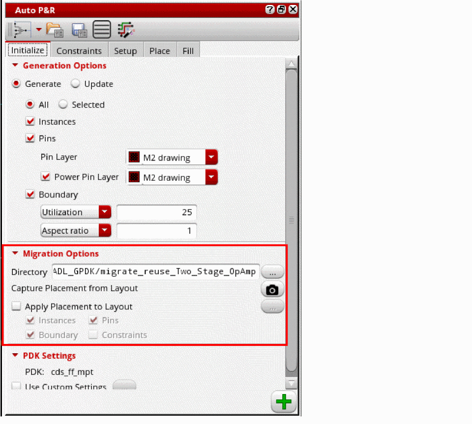
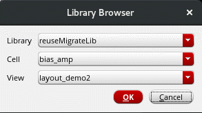
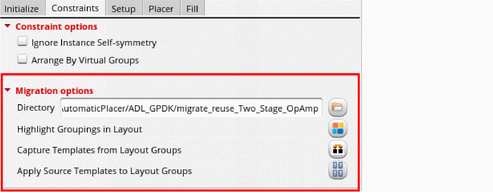
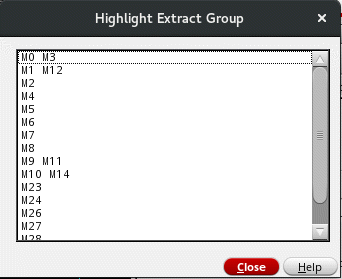
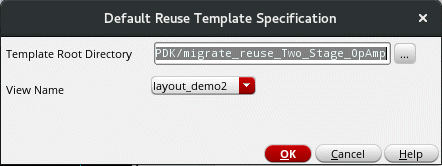

Setting Options for Custom Layout Design Migration
The Auto P&R assistant supports the assisted flow of the Virtuoso® Custom Design Migration solution. In Layout MXL, the following tabs of the Auto P&R assistant include an additional Migration Options section:
- Initialize tab: Captures design placement data, for example, the PR boundary, pins, instances, and routing shapes, from a source layout and applies the captured data to a target layout.
- Constraints tab: Captures groupings from a source layout and applies the captured data to a target layout.
To capture source data and apply it to a target layout:
- Open the source layout in Layout MXL.
-
Open the
Auto_Place_Routeworkspace. -
In the Migration Options section of the Initialize tab of the Auto P&R assistant, specify a Migration Directory. The captured source data is stored in this directory.
By default, the value is set to the current working directory in the format"/migrate_reuse_<libName>".
 - Click the Capture Placement from Layout button to capture data from the source layout.
- Select Apply Placement to Layout to apply the captured placement data to a target layout.
- Select the required settings to be applied to the target layout — Instances, Pins, Boundary, and Constraints.
-
Click the Ellipses button and select the target layout.
 - Click to apply the captured data to the target layout and initialize the design.
-
Open the Constraints tab.
By default, Directory is set to the same as Migration Directory on the Initialize tab. If you make any changes, the value is automatically reset. -
Click Highlight Groupings In Layout to display the Highlight Extract Group form.
 - Select the groupings to be highlighted in the source layout. The groupings are highlighted in the design canvas.
- Click Close to close the form.
- Click the Capture Templates from Layout Groups button to capture groupings from source layout.
-
Click the Apply Source Templates to Layout Groups button. The Default Reuse Template Specification form appears.
 - By default, the Template Root Directory is the same as the directory in which the template was initially captured.
- Select the view from which the groupings were captured.
- Click OK.
Related Topics
Auto P&R Assistant User Interface for Device-Level Placement
Return to top